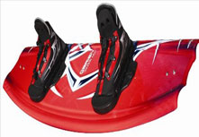

Wakeboards
Wakeboards are buoyant, with the core usually consisting of foam mixed with resin and coated with fiberglass. Metal screws are inserted to attach bindings and fins. The configuration and positioning of the fins and bindings varies according to rider preference and is adjusted for a variety of reasons. A wakeboarder will change the type of fins they use for different types of tricks. For example, shallow fins (which do not protrude into the water very far) are better for surface tricks, such as flat spins. Many newer board models contain small molded fins on the board which allows the rider to use smaller center fins and also to create less drag. Board hardware is often set up to allow a rider to ride "Switch" or "Fakie", with either foot forward. Such setups are usually symmetrical in layout. New riders normally set up their boards to be comfortable to ride with their "natural" foot forward, which does not allow for riding Switch without modifications.
Rocker
The "rocker" is the bend in a wakeboard from tip to tail. There are many various types of rocker shapes, but the most common are the continuous and three-stage rocker. A continuous rocker is a smooth curve that does not change from tip to tail, while a three-stage rocker has two distinct bend points, almost like a skateboard deck but not nearly as drastic. Wakeboards with continuous rocker are faster to ride because the water flows without disruption across the bottom of the wakeboard. Wakeboards with a three-stage rocker push more water in front of the wakeboard, making the ride slower but allowing riders to jump higher off the water.
Length
Throughout the years, different riders have been known to ride wakeboards that may seem too big or too small for them according to the manufacturer’s sizing chart. The reason is that wakeboards a size smaller or a size bigger can help distinguish a certain style of riding. Using a smaller wakeboard will make the wakeboard feel lighter, spin faster and seem more aggressive but also make landing clean more difficult. Using a larger wakeboard lends a slower, smoother style.
Width
The width of a wakeboard directly affects how high it sits in the water. There are three places to check wakeboard widths: tips and tails – those are generally the same – and in the middle. Narrower tips and tails sit lower and make the wakeboard turn more aggressively. Wider tips and tails allow for more surface tricks, and a better release for spins off the wake. However, the main variable that changes with the width of the middle of the wakeboard is the height that can be gained off the water; the wider the middle of the board, the higher it will sit in the water and the harder it will bounce off the wake.
Bottom Design
There are many different bottom designs in wakeboards – it is a feature wakeboard shapers use to express their own style. On the bottom of the wakeboard you will see concaves, channels or maybe even nothing at all. Each performs a different function, fine-tuning how the wakeboard rides through the water according to its width from tip to tail, fin setup, and rocker/tip/tail shape. Concaves create lift and make the wakeboard sit higher in the water. For instance, a double concave in the middle and a single concave in the tip and tail keep the wakeboard riding higher in the water overall. But the double concave in the middle will always sit higher than the single concave. Channels act like long fins. It’s something for the water to run into and along to help the wakeboard edge harder. If there are channels through the middle of the wakeboard and not at the tip or tail, it will be a hard-edging wakeboard but should still release well through the wake, depending on the fin setup. On a wakeboard with channels running through the tip and tail, the fins will hook better, but the wakeboard will not release as well through the wake. Finally, a featureless wakeboard bottom lets the tip and tail shape, and the width throughout the rocker and the fins, determine the nature of the board.
The closer the fins are placed towards the center of the wakeboard, the quicker and better the wakeboard releases from the wake. The farther out towards the tip and tail they are placed, the longer the wakeboard will stay hooked into the wake, providing less release.
Source:Wikipedia